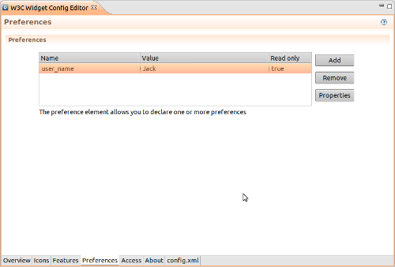

The Preferences tab lets you define name-value pairs that will be associated with the widget the first time the widget is started.
To add a preference:

More information about preferences can be found at Preference - W3C Widgets Specification.